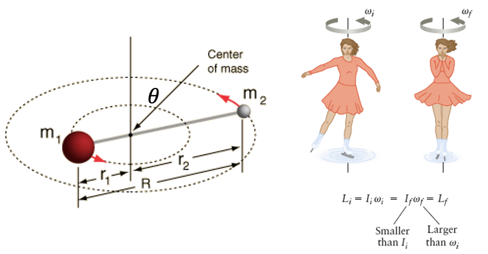
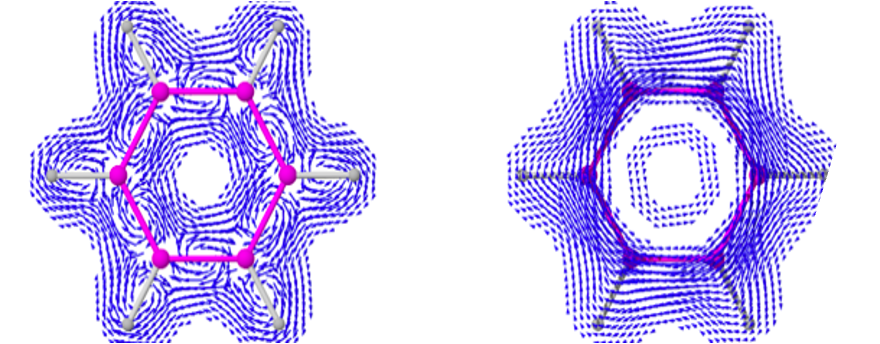

Chapter 5: Angular Momentum, and Rotational Motion#
Prof. Eugene DePrince, Florida State University, Prof. Jay Foley, UNC Charlotte
In the previous notebooks, we discussed quantum mechanical problems involving translational and vibrational motion. In this notebook, we explore the properties of the operators corresponding to the angular momentum of a microscopic particle and model problems for rotational motion. We will find analytic solutions the Schrödinger equation for the particle-on-a-ring and particle-on-a-sphere models, which are models for rotational in two or three dimensions, respectively. The particle-on-a-sphere model is also known as the rigid rotor. We will also use an alternative approach based on “ladder” operators to find eigenvalues of some angular momentum operators. The properties of angular momentum discussed in this chapter have many similarities (but also key differences) with spin angular momentum discussed in the first chapter of this book, so we will reiterate some of the salient points about spin angular momentum at the end.
Comparison between linear and angular momentum#
The picture we can often have in our mind for rotational motion in two dimensions is the rotation of two masses about a fixed axis where each mass is constrained to lie in a common plane. We illustrate that with a diatomic rotating in a plan, and with a figure skater rotating in a plane. 
What are the key properties and descriptors that we use for rotational motion, and how do they differ from linear motion?
The following table summarizes these different properties and descriptors.
Quantity |
Description |
Equation (LaTeX) |
|---|---|---|
Mass \(m\) |
Resistance to the effect of a force |
|
Velocity \(v\) |
Rate of change of position |
\( v = \frac{dx}{dt} \) |
Angular Velocity \(\omega\) |
Rate of change of angle of orientation |
\( \omega = \frac{d\theta}{dt} \) |
Linear Momentum \(p\) |
Product of mass and velocity |
\( p = m v\) |
Kinetic Energy \(T\) (linear) |
Translational kinetic energy |
\( T = \frac{1}{2} m v^2 = \frac{p^2}{2m} \) |
Moment of Inertia \(I\) |
Resistance to the effect of an angular force (torque) |
\( I = \sum_i m_i r_i^2 = \mu R^2 \) |
Reduced Mass \(\mu\) |
Defined in terms of two masses \(m_1, m_2\) |
\(\mu = \frac{m_1 \cdot m_2}{m_1 + m_2} \) |
Angular Momentum \(L\) |
Rotational analog of linear momentum |
\( L = I \omega\) |
Kinetic Energy \(T\)(rotational) |
Rotational kinetic energy |
\( T = \frac{1}{2} I \omega^2 = \frac{L^2}{2I} \) |
Chemical realizations of rotations in 2D#
The kind of constrained rotational motion just described might not sound particularly relevant to chemistry, but in fact it is actually more common than you might think. The following two scenarios arise in many contexts in chemistry
The rotational motion of a molecule adsorbed to a solid surface, which occurs broadly in hetergeneous catalysis, surface science, etc

The rotational orbits of electrons in aromatic systems like benzene, porphyrin, etc 
Angular Momentum#
Consider a particle of mass, \(m\), with position \(\vec{r} = (x, y, z)\) and linear momentum \(\vec{p} = (p_x, p_y, p_z).\) The angular momentum for this particle is given by the cross product of the position and momentum vectors, i.e.,
The \(x\), \(y\), and \(z\) components of the angular momentum are
Given that \(\hat{p}_x = -i\hbar \frac{\partial}{\partial x},\) etc., the corresponding angular momentum operators are
We can also define an operator for the square of the angular momentum as
It will be useful to consider the commutator properties of these operators. If any commute, then it will be possible to determine simultaneous eigenfunctions of the operators, and, as a result, it will be possible to specify the corresponding observables simultaneously, with arbitrary precision. Let us begin with the commutator of \(\hat{L}_x\) and \(\hat{L}_z\):
For the first term on the right-hand side of this equation, we have
For the second term, we have
Combining these results, most of the terms cancel, and the action of the commutator on \(f(x,y,z)\) is simply
Therefore,
Similarly, one could show that
Because these operators do not commute with one another, the Heisenberg uncertainty principle states that we cannot specify \(L_x\) and \(L_y\), \(L_x\) and \(L_z\), or \(L_y\) and \(L_z\) simultaneously, with arbitrary precision. Similarly, we cannot find a complete set of eigenfunctions of any pair of these operators.
Practice
Question 1. Show that $\( \begin{align} [\hat{L}_y, \hat{L}_z] = i\hbar \hat{L}_x \end{align}\)\( and \)\( \begin{align} [\hat{L}_z, \hat{L}_x] = i\hbar \hat{L}_y \end{align}\)$
Now, consider the commutator of \(\hat{L}^2\) and \(\hat{L}_x\).
We have
where we are able to eliminate the first term because the commutator of an operator with itself is zero. It turns out that we can evaluate the remaining commutators with knowledge of the identity
For the commutator involving \(\hat{L}_y^2\), we have
Similarly, the commutator involving \(\hat{L}_z^2\) evaluates to
As a result,
It turns out that \(\hat{L}^2\) will commute with any cartesian component of the angular momentum operator, i.e.,
As a result, there exists a complete set of eigenfunctions of both \(\hat{L}^2\) and one cartesian component of the angular momentum operator. According to the Heisenberg uncertainty principle, this result also suggests that it is possible to specify simultaneously, with arbitrary precision, both the square of the angular momentum (\(L^2\)) and the \(x\)-component of the angular momentum vector, \(L_x\) (or \(L^2\) and \(L_y\) or \(L^2\) and \(L_z\)).
Practice
Question 2. Show that $\( \begin{align} [\hat{L}^2, \hat{L}_y] = 0 \end{align}\)\( and \)\( \begin{align} [\hat{L}^2, \hat{L}_z] = 0 \end{align}\)$
Spherical Polar Coordinates#
The spherical polar coordinate depicted below is the most natural coordinate system for describing rotational motion.
from IPython.display import Image
Image(url = "https://raw.githubusercontent.com/deprincelab/deprincelab.github.io/main/tutorials/jupyter_notebooks/rotation/spherical_polar_coordinates.png", width=300)

Here, \(r\), represents the distance from the origin and spans the range \(r = [0, \infty]\). The angle, \(\phi\), is the azimuthal angle, which spans the range \(\phi = [0, 2\pi]\) radians. The angle, \(\theta\), is the polar angle, which spanse the range \(\theta = [0, \pi]\) radians. The spherical polar coordinates are related to the usual Cartesian coordinates by
In order to represent quantum mechanical operators in spherical polar coordinates, we first write down the operator in Cartesian coordinates and then use the relations above, as well as the chain rule to transform any derivatives. For the partial derivative with respect to \(x\), we have
Similarly, for the partial derivative with respect to \(y\), we have
Lastly, for the partial derivative with respect to \(y\), we have
Given these results, we can express the angular momentum operators in spherical coordinates as
and $\(\begin{align} \hat{L}^2 = -\hbar^2 \left [ \frac{\partial^2}{\partial \theta^2} + \cot(\theta)\frac{\partial}{\partial \theta} + \frac{1}{\sin^2(\theta)}\frac{\partial^2}{\partial \phi^2} \right ] \end{align}\)$
Recall that, based on the commutator relations given above, we will be able to select simultaneous eigenfunctions of \(\hat{L}^2\) and at most one of the cartesian components of the angular momentum operator. The simplicity of the operator \(\hat{L}_z\), relative to \(\hat{L}_x\) and \(\hat{L}_y\), makes this operator a desirable target for the following analyses.
The Particle-on-a-Ring Model#
Consider a particle of mass, \(m\), constrained to move on a ring of fixed radius, \(r\), in the \(xy\) plane.
Image(url = "https://raw.githubusercontent.com/deprincelab/deprincelab.github.io/main/tutorials/jupyter_notebooks/rotation/particle_on_a_ring.png", width=300)

What would the angular momentum of a classical particle traveling on a ring be? Because the motion is constrained to the \(xy\) plane, the \(z\)-components of the position, \(\vec{r}\), and momentum, \(\vec{p}\), are zero, and the angular momentum of the classical particle would thus be
where \(L_z = x p_y - y p_x\)
Let us determine the energy eigenfunctions for the quantum-mechanical particle on a ring. In order to do so, we must consider what sort of potential will constrain the particle to remain on the ring. We choose the potential such that it is zero when the particle is on the ring and infinite otherwise, so this problem resembles an angular version of the particle-in-a-box (PIB) problem. Like the PIB, the wave function will be zero in all regions of space where the potential is infinite, so we only consider the “region” of space corresponding to the ring. The Hamiltonian on the ring will be most compactly represented in spherical polar coordinates. Again, by applying the chain rule, we obtain
The particle-on-a-rign energy eigenfunctions will be functions of the azimuthal angle, \(\phi,\) only, so we can safely ignore all derivatives involving \(r\) or \(\theta\). The Laplacian, \(\nabla^2\), then simplifies to
In the \(xy\) plane, the polar angle, \(\theta = \frac{\pi}{2}\), so \(\sin^2(\theta) = 1\) and the Hamiltonian reduces to
where we have introduced the moment of inertia, \(I = mr^2.\) Interestingly, this Hamiltonian could also be expressed in terms of the operator for the \(z\) component of the angular momentum, i.e.,
Given this form for the Hamiltonian, is is clear that \(\hat{H}\) and \(\hat{L}_z\) will commute and we should thus be able to obtain simultaneous eigenfunctions of both operators.
Now, let us find solutions to the Schrödinger equation. We have
A possible solution to this equation is
with \(b = \left ( 2EI \right)^{1/2}\) or \(E = \frac{b^2}{2I}\). This wave function is also an eigenfunction of \(\hat{L}_z\)
So, we have \(L_z = b\) and \(E = \frac{b^2}{2I} = \frac{L_z^2}{2I}.\) Note that the sign of \(b\) provides information regarding the direction of rotation. A positive value of \(b\) indicates that the rotation is clockwise, when viewing the ring from below. A negative value of \(b\) indicates that the rotation is counter-clockwise, when viewing the ring from below.
Practice
Question 3. Show that \(\psi(\phi) = C e^{ib\phi/\hbar} + D e^{-ib\phi/\hbar}\) is a solution to the Schrödinger equation for the particle-on-a-ring problem. What is the energy?
Question 4. Show that \(\psi(\phi) = C e^{ib\phi/\hbar} + D e^{-ib\phi/\hbar}\) is not an eigenfunction of the operator, \(\hat{L}_z\).
What boundary conditions should be satisfied by \(\psi(\phi) = A e^{ib\phi/\hbar}\)? Because the coordinate system is periodic in \(\phi\), we must be careful to ensure that the wave function is single valued. We have
or
To satisfy this equation, the cosine term must be equal to one, and the sine term must be equal to zero. These conditions are satisfied by the choice
or \(b = m\hbar\), where \(m = 0, \pm 1, \pm 2,\) etc. Now, after the application of this boundary condition, we can see that the energy for a particle-on-a-ring system in the state
is quantized
where we have added the subscripts to indicate that the state can be characterized by the quantum number \(m\). In addition to the energy, the \(z\) component of the angular momentum is also quantized
The quantization of a spatial quantity such as \(L_z\) is called space quantization.
Before moving on, we note that we can determine the unknown coefficient, \(A\), via normalization:
Taking \(A\) to be real-valued, we have \(A = (\frac{1}{2\pi})^{1/2}\) and
The Particle-on-a-Sphere Model#
Energies and Wave Functions#
Consider a particle of mass, \(m,\) confined to rotate on the surface of a sphere of fixed radius, \(r\). Like in the particle-on-a-ring problem, the motion of the particle is constrained by a potential that is zero on the surface of the sphere and infinite elsewhere. The Hamiltonian in the region of space corresponding to the surface of the sphere is
This Hamiltonian can be expressed more compactly by recognizing that the parts involving the angular derivatives are actually related to \(\hat{L}^2\), i.e,
Like in the particle-on-a-ring problem, we ignore derivatives with respect to \(r\) because the radius is fixed, and we are left with
Now, it is evident that the eigenfunctions of the particle-on-a-sphere Hamiltonian are also eigenfunctions of the operator corresponding to the square of the angular momentum.
Recall that \(\hat{L}^2\) commutes with \(\hat{L}_z\). As such, we could choose to find solutions to the Schrödinger equation for the particle-on-a-sphere model that are simultaneous eigenfunctions of \(\hat{L}^2\) and \(\hat{L}_z\) that satisfy
With infinite wisdom, we note that there is no \(\theta\) dependence in \(\hat{L}_z\), so it seems reasonable to expect that \(Y(\theta, \phi)\) is factorizable into a product of functions that depend only on \(\theta\) or \(\phi.\) Let’s try the form
If we insert this form into the eigenvalue equation for \(\hat{L}_z\), we obtain
which, not surprisingly, is just an eigenvalue equation for \(\hat{L}_z\), without any \(\theta\) component. In the previous section, we found that the particle-on-a-ring energy eigenfunctions were also eigenfunctions of the \(\hat{L}_z\), so we choose
and
with \(m = 0, \pm 1, \pm 2\), etc. Without the restriction on \(m,\) the \(phi\) component of \(Y(\theta, \phi)\) would not be well behaved. Like we found for the particle-on-a-ring model, the eigenvalue \(b\) is equal to \(m\hbar\).
To find \(f(\theta)\), we consider the eigenvalue equation for \(\hat{L}^2\)
which, after evaluating the action of \(\hat{L}^2\) on \(g(\theta)\) and collecting terms, gives
Solving this differential equation is quite complicated, so we will discuss the main points in the process. A detailed solution is given in Chapter 5 of Levine’s Quantum Chemistry textbook. That text outlines several clever choices along the way to the solution, including a change of variables
and the introduction of an auxiliary function, \(h(w)\), which is related to \(f(w)\) by
The function \(h(w)\) is expanded as a power series
Inserting this form for \(h(w)\) into the eigenvalue equation for \(\hat{L}^2\) eventually leads to a two-term recursion relation for the expansion coefficients
Like in the quantum harmonic oscillator, inspection of various limits reveals that the \(\hat{L}^2\) eigenfunctions are only well-behaved if the series expansion for \(h(w)\) truncates (at \(k_\text{max}\), for example). Then, we have
\(k_\text{max}\) corresponds to the upper limit in the series summation, so it must be a non-negative integer. Because \(|m| = 0, 1, 2,\) etc. is also non-negative, the sum of these two quantities is non-negative and is a quantum number that characterizes the eigenfunctions of \(\hat{L}^2\):
and thus the square of the angular momentum for a particle confined to move on a sphere is quantized,
Note that this relationship also implies that \(m\) is bounded by \(l\), i.e.,
Now, we have
and, inserting this result into the Schrödinger equation, we have
At this point, it is clear that the energy, the square of the angular momentum, and the \(z\) projection of the angular momentum for a particle constrained to move on the surface of a sphere are all quantized, with
From these results, we can see that the energy depends only on the quantum number, \(l,\) and, each energy level is \((2l+1)\)-fold degenerate because, for each \(l\), there are \(2l+1\) possible values of the quantum number, \(m.\)
Because the states can be characterized \(l\) and \(m,\) we label the wave functions for these states as \(Y(\theta, \phi) \to Y^m_l(\theta, \phi).\) What is the form of these functions? We have
with
where the series expansion coefficients are determined by recursion. Note that the sum runs over even or odd non-negative integers depending on whether \(k_\text{max} = l - |m|\) is even or odd. The sum must be restricted in this way to guarantee that the series truncates at \(k_\text{max}.\) It turns out that \(f(\theta)\) can be expressed in terms of special functions called associated Legendre polynomials, \(\rho_l^{|m|},\)
so the wave function is
These special functions are known as the spherical harmonics. The spherical harmonics with up to \(l=2\) are tabulated below.
\(Y^0_0(\theta,\phi)\) |
\(\frac{1}{2}\sqrt{\frac{1}{\pi}}\) |
\(Y^0_1(\theta,\phi)\) |
\(\frac{1}{2}\sqrt{\frac{3}{\pi}} \cos(\theta)\) |
\(Y^{\pm 1}_1(\theta,\phi)\) |
\(\mp\frac{1}{2}\sqrt{\frac{3}{2\pi}} e^{\pm i \phi}\sin(\theta)\) |
\(Y^0_2(\theta,\phi)\) |
\(\frac{1}{4}\sqrt{\frac{5}{\pi}}\left (3 \cos^2(\theta)-1\right)\) |
\(Y^{\pm 1}_2(\theta,\phi)\) |
\(\mp\frac{1}{2}\sqrt{\frac{15}{2\pi}}e^{\pm i \phi}\sin(\theta) \cos(\theta)\) |
\(Y^{\pm 2}_2(\theta,\phi)\) |
\(\frac{1}{4}\sqrt{\frac{15}{2\pi}}e^{\pm 2i \phi}\sin^2(\theta)\) |
Vector Diagrams#
Vector diagrams allow us to visualize how the angular momentum vector is oriented in space. Consider a particle in a state represented by \(Y^m_l(\theta, \phi).\) The magnitude of the total angular momentum is determined by the quantum number, \(l\), i.e., \(|L| = [l(l+1)\hbar^2]^{1/2},\) while the \(z\) projection of the angular momentum is determined by the quantum number, \(m.\) These quantities can be visualized for the \(l=0, 1, 2, 3\) states with the following Python code
import numpy as np
import matplotlib.pyplot as plt
fig, (ax0, ax1, ax2, ax3) = plt.subplots(1, 4)
ax = []
ax.append(ax0)
ax.append(ax1)
ax.append(ax2)
ax.append(ax3)
# l = 0, 1, 2, 3
for l in range (0, 4):
magnitude = np.sqrt(l * (l + 1))
# m = -l ... l
for m in range (-l, l+1):
dx = np.sqrt(magnitude*magnitude - m*m)
dy = m
ax[l].arrow(0, 0, dx, dy, head_width = 0.15, length_includes_head = True)
ax[l].arrow(0, dy, dx, 0, linestyle = 'dotted', linewidth = 0.5)
ax[l].set_ylim(-4, 4)
ax[l].set_xlim(0, 4)
ax0.set_ylabel(r'z (units of $\hbar$)')
Text(0, 0.5, 'z (units of $\\hbar$)')

From this figure, we can make the following observations:
The ground state (\(l=0\)) is a state for which the particle has zero angular momentum.
For all states with \(l>0,\), there are \(2l+1\) different states with different \(m\) values. The magnitude of the angular momentum is the same for each of these states (as is the energy), but the direction in which the angular momentum vector points is different.
The \(z\) projection of the angular momentum is quantized. This space quantization is at odds with the classical picture of angular momentum in a classical rotating body. However, we can see that the number of possible \(z\) projections increases with \(l\). In the limit that \(l\) becomes large, the \(z\) projection of the angular momentum becomes effectively continuous. This result is another manifestation of the Bohr Correspondence Principle.
This vector diagram is informative, but it is misleading in the sense that it makes it appear as though, in addition to knowledge regarding the magnitude and \(z\) projection of the angular momentum vector, we also know something about its \(x\) or \(y\) component, depending on what the \(x\) axis in the figure above is meant to represent. In reality, we can know nothing about the \(x\) and \(y\) components of the angular momentum vector because we know exactly what the \(z\) component is and the relevant operators do not commute (although, the \(l=0\) state is a special case which we will consider below). In reality, the angular momentum vector should lie on the edge of a cone with known magnitude and \(z\) projection, as the following Python code illustrates for the \(l=1\) states.
fig = plt.figure()
ax = plt.axes(projection="3d")
ax.view_init(azim=-72)
l = 1
for m in range (-1, 2):
radius = np.sqrt( l*(l+1) - m*m )
x = np.linspace(-radius, radius, 500)
y = np.sqrt(radius**2 - x**2)
for i in range (0, len(x)):
val = abs(x[i]) / abs(x[-1])
plt.plot([0, x[i]], [0, y[i]], [0, m], color = (val, val, val))
plt.plot([0, x[i]], [0, -y[i]], [0, m], color = (val, val, val))
ax.xaxis.set_pane_color((1.0, 1.0, 1.0, 0.0))
ax.yaxis.set_pane_color((1.0, 1.0, 1.0, 0.0))
ax.zaxis.set_pane_color((1.0, 1.0, 1.0, 0.0))
ax.zaxis.set_ticks(ticks=[-1, 0, 1])
ax.set_zlabel(r'z (units of $\hbar$)', rotation = 0, labelpad= -2)
plt.xticks(ticks = [])
plt.yticks(ticks = [])
plt.show()

A Note Regarding Uncertainty#
The general form of the Heisenberg Uncertainty Principle states that the product of the uncertainties in observables \(A\) and \(B\) is bounded by an expectation value involving the commutators of the corresponding operators. Specifically, we have
If this commutator is zero, then it is possible to specify a complete set of common eigenfunctions of \(\hat{A}\) and \(\hat{B}\). Conversely, if these operators do not commute, then no such set of eigenfunctions exist, and it will not be possible, in general, to specify both \(A\) and \(B\) exactly, simultaneously.
For a particle constrained to move on a sphere in a state described by \(Y^m_l(\theta, \phi),\) the product of the uncertainties in the \(x\) and \(y\) projections of the angular momentum would be
Because \(\hat{L}_x\) and \(\hat{L}_y\) do not commute, it is impossible to find a complete set of common eigenfunctions for both operators. Is it ever possible to specify the \(x\) and \(y\) components of the angular momentum, simultaneously, with arbitrary precision? Surprisingly, the answer to this question is yes, but only in a single special case. Consider the state with \(l=0\) and \(m=0\). This is a state with zero total angular momentum and, obviously, zero \(z\) projection of angular momentum. Because the total angular momentum is zero, the \(x\) and \(y\) projections must be exactly equal to zero, too! This result implies that the function \(Y^0_0(\theta, \phi)\) is an eigenfunction of all four operators, \(\hat{L}^2\), \(\hat{L}_x\), \(\hat{L}_y\), and \(\hat{L}_z.\) The existence of a single common eigenfunction of these operators does not contradict the Heisenberg Uncertainty Principle, though. It is still impossible to specify a complete set of common eigenfunctions for these operators.
The Rigid Rotor#
The particle-on-a-sphere model is equivalent to a model for molecular rotations known as the rigid rotor. In this section, we derive the Hamiltonian for the rigid-rotor problem and show the equivalence of these two models.
Consider two particles of mass \(m_1\) and \(m_2\) moving in three dimensions with coordinates \(\vec{r}_1\) and \(\vec{r}_2.\) The Hamiltonian for this system depends on the coordinates of both particles
where \(V(\vec{r})\) is a potenial that depends on the inter-particle separation
As written, this Hamiltonian is not separable in the coordinates of the particles, but we can obtain a separable Hamiltonian through a coordinate transformation. First, we introduce the center-of-mass coordinate, \(\vec{R},\) defined as
which can be re-expressed in terms of the coordinates of one of the particles and \(\vec{r}\) as
Now, we introduce the total and reduced masses, \(M\) and \(\mu,\) respectively, which are defined by
From the expression for the center-of-mass cordinate, we have
We can also express \(\vec{r}_1\) and \(\vec{r}_2\) in terms of \(\vec{R}\) and \(\vec{r}\) as
Now, what happens to the classical expression for the kinetic energy with these new coordinates? We begin with the momenta for these particles, defined by
The kinetic energy is then
where \(\vec{p}_M\) and \(\vec{p}_\mu\) are momenta for effective particles of mass \(M\) and \(\mu\) that depend on the coordinates \(\vec{R}\) and \(\vec{r},\) respectively. We can define quantum mechanical operators for these momenta and insert them into the Hamiltonian to obtain
The first term depends on the center-of-mass coordinate \((\vec{R}),\) while the second and third terms depend on the inter-particle separation coordinate \((\vec{r}).\) With this choice of coordinates, the Hamiltonian is additively separable. As a result, the wave function can be expressed as a product of wave functions for effective particles of mass \(M\) and \(\mu\)
and the energy will be expressible as a sum
Because the Hamiltonian is separable, these wave function and energy components can be obtained by solving separate Schrödinger equations that involve only one coordinate, i.e.,
where
The first of these equations resembles the Schrödinger equation for a free-particle of mass, \(M.\) As such, the energy, \(E_M,\) corresponds to the translational energy of the entire system traveling through space and will not be quantized. The Schrödinger equation for the effective particle of mass, \(\mu,\) is more complicated, and its solution will depend on the precise form of \(V(\vec{r}).\) Depending on the form of this potential, \(E_\mu\) may be quantized.
To this point, this analysis has been completely general. The Hamiltonian for any two-particle system with a potential that depends on the inter-particle distance can be separated in this way. The \(\vec{R}\)-dependent part of the wave function will always look like that for a free-particle, where as the \(\vec{r}\)-dependent part will be more interesting. Here, we are specifically concerned with the case where \(\psi(\vec{r})\) is a wave function characterizing the rotational motion of a molecular system (specifically, a diatomic molecule). In the rigid rotor model, the atoms in this molecular are assumed to rotate about their center of mass, at a fixed distance, \(d\) from one-another. As a result \(V(\vec{r})\) is chosen to be zero when \(|\vec{r}|=d\) and infinite otherwise. This potential is sperically symmetrical, meaning that it depends on the magnitude but not the orientation of \(\vec{r}.\) For a particle experiencing such a potential, the force experienced by the particle is radially directed. For this reason, this type of a problem is called a central force problem.
Practice
Question 5.
Show that the force for a central force problem is
\[\begin{align}\vec{f} = -\frac{d V(r)}{dr} \frac{\vec{r}}{r}\end{align}\]where \(r = |\vec{r}|.\)
It turns out that the wave function for a central force problem is separable as
where \(R(r)\) is a radial wave function, and \(Y^m_l(\theta, \phi)\) are the same spherical harmonics that are eigenfunctions of the orbital angular momentum operators, \(\hat{L}^2\) and \(\hat{L}_z.\) Now, because \(r\) is fixed in the rigid rotor problem, the function \(R(r)\) has no meaning and is ignored. We are left with
The Hamiltonian for the rigid rotor is the \(\mu\)-dependent part of the Hamiltonian above. If we consider only the region of space where \(|\vec{r}| = r = d,\) where the potential, \(V(\vec{r}),\) vanishes, then we have
Note that, because \(r\) is fixed, we have replaced it with \(d\) in this expression. Moreover, with \(r\) being fixed, derivatives with respect to \(r\) carry no meaning, so we ignore these terms and are left with
The corresponding Schrödinger equation is
So, the energy for a two-particle rigid rotor is quantized and given by
where \(I = \mu d^2\) is the moment of inertia for the molecule. As was the case for the particle-on-a-sphere model, the rotational quantum number, \(l,\) can take on any non-negative integer, and \(m\) is bounded by \(l\)
As such, each energy level is \((2l+1)\)-fold degenerate.
Note that this result is generalizable to rotating molecules with more than two atoms. Rotational energy levels are given by the energy expression above, augmented by the appropriate moment of inertia.
⚙️ Selection Rules for Molecular Rotations#
The rigid rotor model can be used to predict both rotational energy levels and the spectra arising from molecular rotations.
Here, we derive which rotational transitions are allowed or forbidden according to quantum mechanics.
⚛️ Fermi’s Golden Rule for Rotational Transitions#
When a molecule interacts with an oscillating electric field, transitions between rigid-rotor states occur with a probability proportional to the square modulus of the transition dipole moment:
The form of this matrix element determines which transitions are allowed (non-zero integral) or forbidden (zero integral).
🧮 Derivation of the Δm Selection Rules#
For the harmonic oscillator, we obtained selection rules using recursion relations for Hermite polynomials.
Here, we use commutator relations for angular momentum operators and coordinates.
Step 1. Key commutators#
Practice
Q6. Show that \( [\hat{L}_z, x] = i\hbar y \)
Q7. Show that \( [\hat{L}_z, y] = -i\hbar x \)
Q8. Show that \( [\hat{L}_z, z] = 0 \)
Step 2. Derivation for z-polarized light#
Inserting \([\hat{L}_z, z] = 0 \) into an integral involving the spherical harmonics gives
A non-zero transition moment requires \( \langle Y^m_l | z | Y^{m'}_{l'} \rangle \neq 0 \), so this can only hold if
Thus, z-polarized light (a “π” transition) induces only transitions with
\(\Delta m = 0\).
Step 3. Derivation for x and y#
A similar argument using \([ \hat{L}_z, x ] = i\hbar y\) and \([ \hat{L}_z, y ] = -i\hbar x\) shows that transitions involving \(x\) or \(y\) components require
These correspond to circularly polarized light:
right-handed (\(\sigma^+\)) with \(\Delta m = +1\),
and left-handed (\(\sigma^-\)) with \(\Delta m = -1\).
📦 Summary of Δm Rules by Polarization#
Light polarization |
Operator component |
Label |
Allowed Δm |
|---|---|---|---|
Linear (‖ z) |
(z) |
π |
0 |
Circular (+) |
(x + i y) |
σ⁺ |
+1 |
Circular (–) |
(x - i y) |
σ⁻ |
−1 |
For unpolarized light in an isotropic sample, all three occur, so
$\(
\boxed{\Delta m = 0, \pm 1}
\)$
🌐 Spherical-Tensor View (Δl Selection Rule)#
We can combine \(x, y, z\) into spherical components:
These transform like the rank-1 spherical harmonic \(Y_1^q(\theta,\phi)\). The relevant integral is
which is non-zero only if the angular-momentum coupling conditions are met:
The \(\Delta l = 0\) case is forbidden because electric-dipole transitions must change parity, and spherical harmonics of the same \(l\) have the same parity.
💡 Physical Interpretation#
z-polarized (“π”) radiation → transitions where the projection of angular momentum is unchanged \((\Delta m = 0\)).
Circularly polarized (“σ±”) radiation → transitions that raise or lower the projection of angular momentum by one unit (\(\Delta m = \pm1\)).
For isotropic or unpolarized fields, all three are possible.
🌟 Requirement of a Permanent Dipole#
For a pure rotational electric-dipole transition to be observable, the molecule must have a permanent dipole moment:
Molecule |
Permanent dipole? |
Rotational spectrum? |
|---|---|---|
CO |
✅ Yes |
✔ Allowed |
HCl |
✅ Yes |
✔ Allowed |
N₂ |
❌ No |
✖ Forbidden |
O₂ |
❌ No |
✖ Forbidden |
Homonuclear diatomics (N₂, O₂) are microwave-silent but do show rotational Raman spectra, where the operator is the polarizability tensor (rank 2), giving different rules:
\(\Delta J = 0, \pm 2\), \(\Delta m = 0, \pm 2\).
🧭 Full Electric-Dipole Selection Rules (Linear Rigid Rotor)#
🔍 Practice Problems#
Q9.
Derive the \(\Delta m = \pm 1\) selection rules explicitly using
\( [\hat{L}_z, x] = i\hbar y \) and \( [\hat{L}_z, y] = -i\hbar x \).
Hint: Combine \(x \pm i y\) to show \([\hat{L}_z, x \pm i y] = \pm \hbar (x \pm i y)\).Q10.
Express \(z\) and \(x \pm i y\) in terms of spherical harmonics \(Y_1^q\), and use the orthogonality of \(Y_l^m\) to show that \(M' = M + q\) and \(l' = l \pm 1\).Q11.
Explain, using parity, why \(\Delta l = 0\) is forbidden for electric-dipole rotational transitions, but allowed for Raman transitions.Q12.
Which of the following molecules have pure rotational microwave spectra: CO, CS₂, H₂O, N₂?
Justify your answer based on molecular symmetry and permanent dipole moment.
✅ Key Takeaways
Transitions are governed by angular momentum and parity conservation.
Electric-dipole rotational transitions follow
\(\Delta l = \pm 1,\ \Delta m = 0, \pm 1\).Observability requires a permanent dipole moment.
Light polarization dictates which \(\Delta m\) branches are active.
Ladder Operators#
Above, we derived the eigenfunctions and eigenvalues of \(\hat{L}^2\) and \(\hat{L}_z\) by solving the respective eigenvalue equations. It turns out that we can also derive the eigenvalues for these operators using only their commutator properties. These results will also apply to other types of angular momentum whose operators have the same commutator properties, like spin angular momentum, so let us consider the following general angular momentum operators
We assume that these operators have similar commutator properties as we derived above, so
Now, we introduce “raising” and “lowering” operators, \(\hat{M}_-\) and \(\hat{M}_+,\) respectively, whose names will become clear soon.
Do these operators commute with \(\hat{M}_z\)? Let’s check.
No! These operators do not commute, and neither do \(\hat{M}_-\) and \(\hat{M}_z.\) For that case, we have
We can reexpress these commutator relations in a form that will soon become useful as
Practice
Question 10.
Show that \([\hat{M}_-, \hat{M}_z] = +\hbar \hat{M}_-\)
Now, consider the eigenvalue equation for \(\hat{M}_z\)
and let us apply \(\hat{M}_+\) on the left to both sides of this equation
Now, we see that the function \(\hat{M}_+ Y\) is an eigenfunction of \(\hat{M}_z\), with eigenvalue one unit of \(\hbar\) higher than that for \(Y,\) which is why we call \(\hat{M}_+\) a “raising” operator. We could repeat this process multiple times to obtain
A similar analysis involving \(\hat{M}_-\) leads to
Hence, \(\hat{M}_\pm\) generate a “ladder” of eigenfunctions of \(\hat{M}_z\), which is why we call such operators “ladder operators.”
Now, does \(\hat{M}^2\) commute with the raising and lowering operators? We have
So, yes, these operators commute, and we thus have
Now, consider the eigenvalue equation for \(\hat{M}^2\)
Let us act on this equation with \(\hat{M}_\pm^k\) on both sides
This result indicates that the function \(\hat{M}_+ Y\) is an eigenfunction of \(\hat{M}^2\) with the same eigenvalue as \(Y.\) As such, each “rung” on the ladder generated by \(\hat{M}_\pm^k\) is an eigenfunction of both \(\hat{M}_z\) and \(\hat{M}^2\).
Is there a limit to the number of times \(\hat{M}_\pm\) can be applied to a state? Let us define a family of functions satisfying
where
Now, if we act on the state \(Y_k\) with the operator \(\hat{M}^2 - \hat{M}_z\) we have
or, equivalently, based on how \(\hat{M}^2\) was defined above
Multiplying this expression on the left by \(Y_k^*\) and integrating over all space yields
The two integrals on the left-hand side of this equation represent expectation values of the square of an operator, the results of which much be non-negative. Similarly, the integral on the right-hand side of this expression is also non-negative. As such, we expect that the quantity \(c-b_k^2\) must also be non-negative, which implies that
This result indicates that \(b_k\) is bounded by \(c.\) In other words, the ladder of functions \(Y_k\) is finite!
If a bound on \(b_k\) exists, our next goal should be to find the maximum / minimum allowed values of \(b_k\) that satisfy
To do so, we can consider the application of the raising operator to the top rung of the ladder:
This result suggests that the state \(\hat{M}_+ Y_\text{max}\) has a larger \(z\) projection of the angular momentum than the state \(Y_\text{max}\), which contradicts our assertion that \(Y_\text{max}\) represents the top rung of the ladder of functions. To avoid this contridiction, the application of \(\hat{M}_+\) to \(Y_\text{max}\) must be zero:
We obtain a useful result if we probe this zero state with \(\hat{M}_-\) as
where on the fourth line, we have made use of the commutator relation given above. Now, we can see that \(c\) and \(b_\text{max}\) should satisfy
or
If we repeat this exercise starting with
which must be true to avoid a similar contradition as we encountered above, we obtain
which suggests
Subtracting this result from the other expression for \(c\) in terms of \(b_\text{max}\) gives
which we can solve as a quadratic equation in \(b_\text{max}\). This equation has two solutions
which simplify to
and
We reject the second solution because \(b_\text{max}\) must be greater than \(b_\text{min}.\) Recall that
where \(k\) is an integer, which suggests that
Given that \(b_\text{max} = -b_\text{min},\) we now see that
and
or
where \(j = 0, \frac{1}{2}, 1, \frac{3}{2}, ...\) Recall that
so we also have
Now, we can insert these results back into the original eigenvalue equations for \(\hat{M}^2\) and \(\hat{M}_z\) to give
Note that this is the same result as we obtained from explicitly solving the eigenvalue equations for the orbital angular momentum operators \(\hat{L}^2\) and \(\hat{L}_z,\) except that the quantum numbers \(j\) and \(m_j\) can take on half-integer values. The half-integer values would be rejected in the orbital angular momentum case because the associated wave functions would not satisfy the boundary conditions for the particle-on-a-sphere problem. It turns out that the half-integer quantum numbers are relevant for a different type of angular momentum, spin angular momentum, which is an intrinsic property of quantum mechanical particles.
Spin Angular Momentum#
Spin angular momentum is an intrinsic property of microscopic particles, like their mass and charge. The concept of spin emerges in Dirac’s relativistic extension of the Schrödinger equation. In non-relativistic quantum mechanics, spin is incorporated into a wave function because we know, from experiment, that quantum particles possess this property. Fundamental particles can be chategorized in one of two ways, based on their spin. Fermions have half-integer spin; for example, electrons are fermions with a spin quantum number, \(s = \frac{1}{2}.\) Bosons have integer spin; for example, photons are bosons with \(s = 1.\)
Let us consider the spin of an electron, which is a fermion. All electrons have \(s = \frac{1}{2},\) which determins the magnitude of the spin angular momentum, \(s(s+1)\hbar^2 = \frac{3}{4}\hbar^2.\) From general chemistry, we learn that electrons can have \(\alpha\) or \(\beta\) spin, and we also refer to these electrons has having spin up or down. The terms “up” and “down” refer to the \(z\) projection of the spin angular momentum, \(m_s \hbar.\) From the analysis in the previous section, we know \(m_s\) for an electron can take on two values. \(\alpha\) spin electrons have \(m_s = + \frac{1}{2},\) while \(\beta\) spin electrons have \(m_s = - \frac{1}{2}.\)
The operators for spin angular momentum are analogous to those we considered above for orbital angular momentum. We have
These operators have the same commutator properties as we derived above for orbital angular momentum, so
Mathematically, we represent spin operators as
where \(\sigma_x,\) \(\sigma_y,\) and \(\sigma_z\) are \(2 \times 2\) Hermitian matrices called “Pauli spin matrices” and are defined by
The spin state of an electron can then be represented as a two-component vector quantity. We have
Are \(|\alpha\rangle\) and \(|\beta \rangle\) eigenfunctions (or eigenvectors) of the spin matrices? For \(\hat{S}_x,\) we have
For \(\hat{S}_y,\) we have
For \(\hat{S}_z,\) we have
So, \(|\alpha\rangle\) and \(|\beta\rangle\) are not eigenfunctions of \(\hat{S}_x\) or \(\hat{S}_y,\) but they are eigenfunctions of \(\hat{S}_z,\) with eigenvalues equal to \(\frac{\hbar}{2}\) and \(-\frac{\hbar}{2},\) respectively.
Are \(|\alpha\rangle\) and \(|\beta\rangle\) are eigenfunctions of \(\hat{S}^2\)? We have
and, similarly,
So, both \(|\alpha\rangle\) and \(|\beta\rangle\) are eigenfunctions of \(\hat{S}^2\), with eigenvalue \(\frac{3\hbar^2}{4}.\)
Lastly, note that a general spin function for an electron could be a linear combination of the \(|\alpha\rangle\) and \(|\beta\rangle\) spin functions, i.e.,
where \(c_1\) and \(c_2\) are probability amplitudes whose square moduli are the respective probabilities that the electron would be found to have either spin up or down, if this property was measured.
Practice
Question 11.
Show that $\(\begin{align}[\hat{S}^2, \hat{S}_x] &= 0 \\ [\hat{S}^2, \hat{S}_y] &= 0 \\ [\hat{S}^2, \hat{S}_z] &= 0 \\ [\hat{S}_x, \hat{S}_y] &= i\hbar \hat{S}_z \\ [\hat{S}_z, \hat{S}_x] &= i\hbar \hat{S}_y \\ [\hat{S}_y, \hat{S}_z] &= i\hbar \hat{S}_x \\ \end{align}\)$
Question 12.
Find spin eigenfunctions of \(\hat{S}_x\) and \(\hat{S}_y.\) Are these eigenfunctions also eigenfunctions of \(\hat{S}^2\)?
Question 13.
Consider rasing and lowering spin operators
\[\begin{split}\begin{align} \hat{S}_\pm &= \hat{S}_x \pm i\hat{S}_y \\ \end{align}\end{split}\]Show that $\(\begin{align} \hat{S}_+|\alpha\rangle &= 0 \\ \hat{S}_+|\beta\rangle &= \hbar|\alpha\rangle \\ \hat{S}_-|\alpha\rangle &= \hbar|\beta\rangle \\ \hat{S}_-|\beta\rangle &= 0 \end{align}\)$